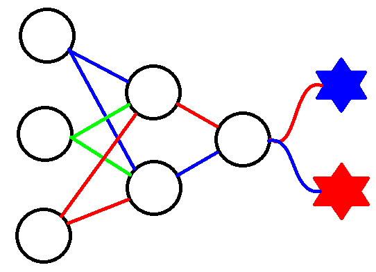

Details
Driving is the most dangerous activity that people do regularly. E4RS hopes to mitigate the damage by allowing hearing impaired/deaf drivers to listen to the audible signals present on the road. A honk of a car horn can be the difference between a car crash and a mere swerve out of the way. An ambulance siren often signals that someone is in peril. Moving out of the way could save someone's life. However, these audible cues are not noticed by hearing impaired/deaf drivers. Another valuable aspect of E4RS is that it provides a way to alert distracted or drowsy drivers of what's happening on the road. E4RS has three stages:

Stage 1: Locating
Locating a sound from another vehicle on the road can be done by simply using timing delays. The first microphone to register a sound is closest to the source of the sound. The ratio of the timing delays of the other microphones receiving the sound relative to the first microphone is used to calculate where the sound originated. This stage involves using three microphones, an interruptible microcontroller, a protoboard, three transistors, three potentiometers (for fine tuning), several diodes, three resistors, and a 12V to 5V DC converter to be implemented off of a standard car battery.
Stage 2: Identifying
Identifying sounds is arguably the most complicated aspect of this project, but is the most successful. E4RS boasts an accuracy rate of 99.80% accuracy on determining between car horns and police/ambulance sirens. More categories of sounds can be implemented in the future. This was done by recording sounds as soon as Stage 1 received a sound, performing Fast Fourier Transforms, then put as an input to the shrunk version of a neural network on the microcontroller. The microcontroller has the weights of a real neural network and uses matrix operations to simulate the neural network. This network was created using Keras with a Tensorflow background.
Stage 3: Sending
This is the most simple stage, but it is just as important. Sending from the microcontroller on the roof of the car to the user can be done in several ways, but is currently only available on iOS, found here. This can be added to other frameworks in the future. The interface aims to be the least distracting it can be while providing the needed input to the user.